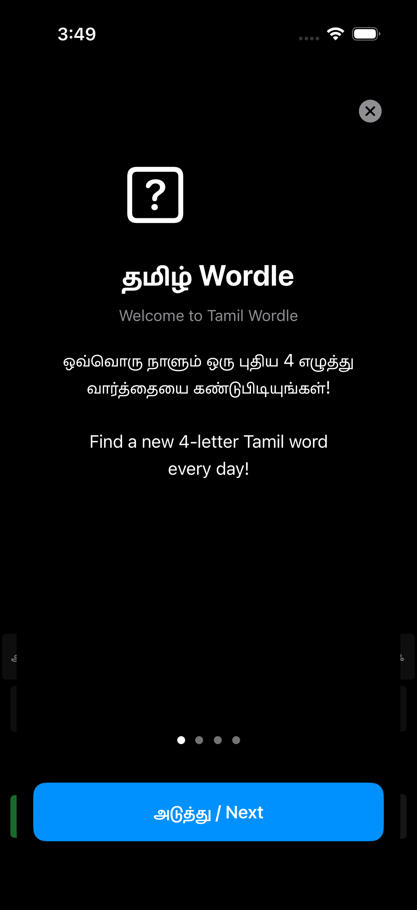
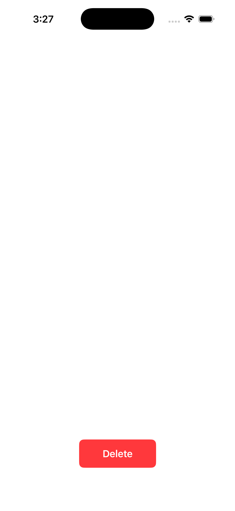

A daily Tamil word puzzle. 4-letter Tamil words, 5 guesses, color feedback. Built with SwiftUI, bilingual Tamil/English UI, tutorial onboarding, stats tracking, daily challenge lockout.

31 Tamil characters (13 vowels + 18 consonants) plus ENTER and DELETE crammed into 4 rows. Keys are tiny (HStack spacing: 2-4pt, font: 12pt). On a real iPhone this will be nearly impossible to tap accurately.
Fix: Split into 5 rows max 7 keys each. Or use a scrollable horizontal row for vowels. Minimum tap target should be 44pt per Apple HIG. Current keys are roughly 28-32pt wide on iPhone 17.
Tutorial Page 1 (shown above) is just text + a generic question-mark icon. No visual example of the game board, no animated tile demo, no "try it now" interaction. Users who skip the tutorial will be lost.
Fix: Replace the question-mark icon with a mini 4x2 animated tile grid showing the color feedback mechanism. Or embed a live interactive guess on Page 2.
Every label is Tamil + English stacked. This doubles vertical space usage and creates visual noise. The target audience is Tamil speakers - English is a fallback, not a co-primary language.
Suggestion: Use device language setting. If locale is ta-IN, show Tamil only. If en-*, show English only. Do not stack both on every screen.
In VariationPickerView.swift the Cancel button opacity is set to 0 and the comment admits there is no proper cancel flow. Users are trapped in the picker if they tap a consonant by mistake.
Fix: Add a working Cancel button or dismiss on background tap. This is a hard blocker for usability.
Only shows "Played" and "Won" counts. No guess distribution histogram, no streak display, no share button. Wordle's shareability (the grid emoji output) is what made it viral. Missing that entirely.
Fix: Add guess distribution (bar chart of wins per attempt count) and a Share button that generates the Tamil tile emoji grid for social sharing.
After playing once, the entire game board is replaced with a static "come back tomorrow" message. No stats preview, no archive of past puzzles, no practice mode. Dead screen for 24 hours.
Fix: Show yesterday's answer, today's stats, and a "practice mode" with random words. Keep users in the app.
Stats and daily progress stored in UserDefaults. No CloudKit sync, no Game Center. Switch devices = lose progress.
A full-screen canvas where users press their thumb to leave organic thumbprint impressions. Uses actual thumb mask images (5 PNGs loaded from Assets), UIKit touch handling for radius/force detection, and opacity accumulation for color building.

The screenshot above is the entire app. White canvas + red Delete button. No title, no instruction, no onboarding for first-time users. A user opening this for the first time has no idea what to do or how it works.
Fix: Add a brief overlay on first launch: "Press your thumb on the screen to draw." Fade it out after first touch. Add a small ? help button that re-shows instructions.
Button says "Delete" but it clears the entire canvas. Users expect "delete" to remove the last mark, not nuke everything. This is a destructive action with no confirmation.
Fix: Label it "Clear All" or "Clear Canvas". Consider an undo button instead - users will accidentally clear their work and rage-quit.
Users create art but cannot export it. No "Save to Photos", no share sheet, no copy. The canvas exists in memory only and dies with the app.
Fix: Add a toolbar with Save (renders canvas to UIImage, writes to Photo Library) and Share (UIActivityViewController).
Every impression is black. No color picker, no tint variation, no gradient. After 5-6 impressions it all looks the same muddy black.
Fix: Add a minimal color palette (4-6 colors) as a floating toolbar. Or cycle through hues based on touch location for a rainbow effect.
Mask images loaded by string names ("1", "2", "3", "4", "4-1") from asset catalog. If any image is renamed or missing, the app silently fails with just a console log. No fallback to a procedural thumbprint.
Fix: If all 5 masks fail to load, fall back to a procedural thumbprint drawn with Core Graphics. Do not leave the canvas non-functional.
Code reads force and maxForce but only varies size by +/-2.5%. On devices without 3D Touch (most modern iPhones) this does nothing. The radius check (>15pt) is the only meaningful input differentiation.
Fix: Use touch duration instead of force. Long press = larger/more opaque impression. This works on all devices.
Neither app has a custom app icon configured in the review screenshots. The simulator shows a default gray grid placeholder. Before App Store submission, both need actual icons in Assets.xcassets.
com.tamilwordle.TamilWordle (matching domain, good)com.thumbdraw.app (clean, good)Neither app explicitly handles dark mode. TamilWordle uses UIColor.systemBackground which adapts, but the game board grid uses hardcoded light colors. ThumbDraw has a hardcoded white background. Both will look broken in dark mode.
TamilWordle's keyboard will be comically oversized on iPad (44pt keys on a 12-inch screen). ThumbDraw will work fine but the single Delete button will look ridiculous centered on a huge canvas. Consider UISupportedInterfaceOrientations restrictions or proper iPad layout.